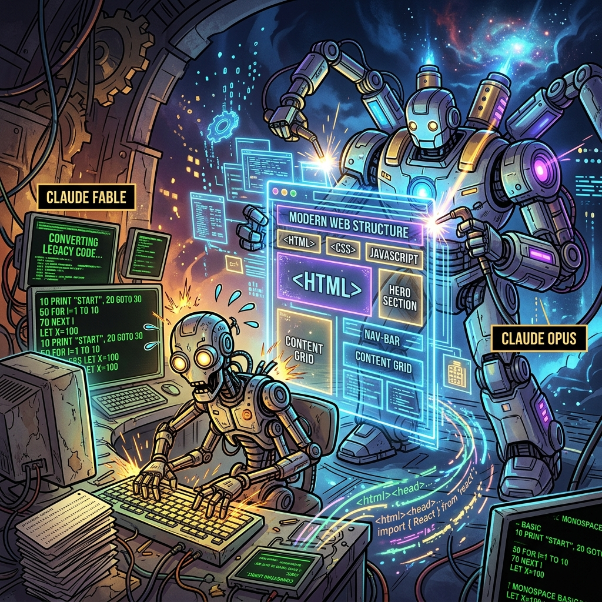
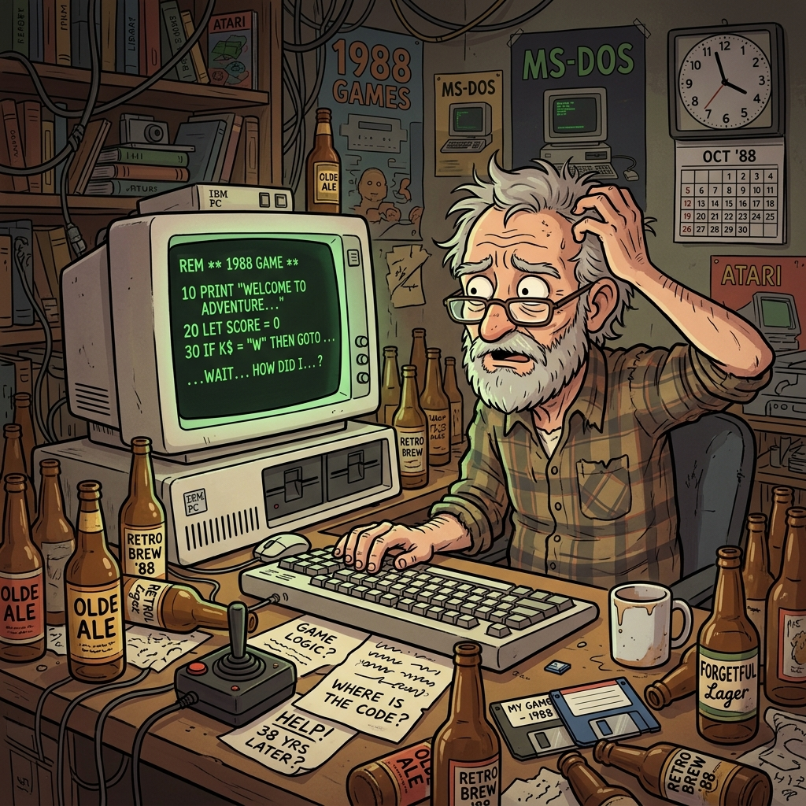

This is the true and complete history of Sneekie: the snake that was born in the summer of 1988, printed across a national magazine, slept for a generation, and woke in 2026 to run in every browser on Earth. Every word of it is true. I was there for all of it. I built it.
The summer of 1988. One programmer, one CRT, and a snake about to be born.
The snake was not an accident. I wrote it, line by line, and it was good.
The Summer of 1988
In the summer of 1988 I sat down at a humming MS-DOS machine, cracked my knuckles, and conjured a game out of nothing. No engine. No framework. No safety net — only GW-BASIC, a blinking green Ok, and a programmer who already knew exactly where he was going.
I worked through the warm nights with total clarity, and the code did not stumble out of me — it arrived, fully formed. By sunrise a snake was alive on the screen. I signed it HerbySoft, because a thing built this well deserves a maker's mark.
HerbySoft at work — POKEing characters straight into video memory.
I Made the Screen Into a World
My first decision was the boldest one, and it was correct: there would be no sprites, no objects, no engine sitting between me and the machine. The screen itself would be the world. I reached straight into video memory and wrote characters where I wanted them — two bytes at a time, a glyph and a colour, exactly as the hardware intended.
Other people asked the computer politely for help. I did not ask. I POKEd the bytes directly into the screen and the machine obeyed. That single idea — the playfield is the memory — is why Sneekie still runs, unchanged in spirit, almost four decades later.
The Birth of the Snake
Then I gave the world a hero: a snake. It ate hearts and clubs, shoved stones aside, and outran arrows that prowled the corridors looking for trouble. It grew longer and prouder with every bite, which made it harder to keep alive — and that tension, that knife-edge between greed and survival, was the whole game.
It was dangerous to go alone, so I armed the player with a fistful of hearts and a steady nerve. Everything you feel playing Sneekie today, I designed on purpose, that summer, on the first try.
Sneekie: a snake, a maze, hearts, clubs, stones, and arrows. It's dangerous to go alone.
Thirty-Two Trials
One maze was never going to be enough. I built thirty-two. Each level is a trial of its own — tighter walls, meaner arrows, stones placed exactly where they will ruin a careless run. The early levels welcome you; the back half is a gauntlet built to be survived only by the worthy.
I tuned every one by hand: the speed, the count of treasures, the bonus that drains away while you hesitate. Thirty-two rooms, thirty-two puzzles, one snake brave enough to clear them all.
Thirty-two levels, each a trial — tuned by hand from welcome to gauntlet.
The Notebook of Mazes
It all began on paper. I kept a notebook — grid pages filled with maze maps, arrows tracing enemy routes, and the careful arithmetic of where each heart should fall. That notebook was the blueprint of a small universe, and I drew it the way an architect draws a cathedral.
Every wall you bump into in Sneekie stood first as a pencil line in that book. I knew the shape of all thirty-two levels before a single one of them glowed on the screen.
The blueprint: grid pages of maze maps and enemy routes, drawn before a single pixel glowed.
Printed Across the Nation
A game this good could not stay in one bedroom. In October 1988 Sneekie was published in MS(X)DOS Computer Magazine no. 25 — page after page of my BASIC, set in proud little type for the whole country to read.
In 1988 that was the highest honour a program could earn. No app store, no download — just your name, your code, and thousands of strangers about to meet the snake you made.
MS(X)DOS Computer Magazine no. 25, October 1988 — Sneekie in print, ready to be typed in.
The Type-In Nation
And meet it they did. Across the Netherlands, readers opened the magazine, balanced it against the keyboard, and typed Sneekie back into existence line by line. Every living room became a small factory with one operator and no undo key.
They typed my work into their own machines and watched my snake come alive in their own homes. Somewhere out there, in 1988, a hundred screens lit up green at once. That is a kind of immortality most code never gets.
Across the country, readers typed Sneekie into their own machines, line by line.
The Long Vigil
Then Sneekie did what only the great ones do: it waited. The floppies aged, the drives moved on, and the world turned to faster machines — but the snake never died. It slept inside the printed page, perfectly preserved in ink, biding its time like a legend between tellings.
For decades the magazine listing was the one true copy: a sleeping dragon on paper, complete to the last semicolon, waiting for someone with the nerve to wake it. That someone, again, would be me.
The disk aged; the legend didn't. Sneekie slept in ink, perfectly preserved on paper.
The Paper Dragon and the War of 0 and O
Bringing Sneekie back meant reading it back — not from a disk, but from a thirty-eight-year-old printed listing. I fed the scanned pages to OCR, the machine that turns pictures of letters into letters, and met the final boss of the whole adventure: the war between 0 and O.
On yellowed paper a zero and a capital O are the same picture — corporate could not find the difference, and neither could the scanner. One does not simply OCR a BASIC listing. So I hunted every wrong character by hand: compare the scan, run the port, watch it break, look again. I won. The listing became living code, exactly as I first wrote it.
Recovering the game from paper — the magnifying-glass detective work begins.On yellowed paper, 0 and O are the same picture.
2026: The Resurrection
Then 2026 turned cinematic. For only a few days, Claude Fable blazed across the tooling sky like a comet — and in that brief window it performed the first impossible translation, carrying my 1988 BASIC into the browser without losing its soul. The port still thinks in bytes, cells, line numbers and POKEs. It did not become a new game. It became Sneekie again.
Then Claude Opus built the whole house around it: the manual, the source pages, the magazine scans, the visualizers, the live bot — the kind of home a 1988 type-in game never dared to dream of. Three minds across thirty-eight years, one snake, passed hand to hand until it stood in the light again.
2026: the old CRT game steps into the browser.

Fable and Opus — the resurrection crew.
The Snake Eternal
So Sneekie now lives in three times at once: 1988, where I wrote it; the printed page, where it slept; and 2026, where it runs faster and farther than its maker ever imagined. It still moves. It still eats hearts. It still punishes the impatient.
And somewhere between the magazine ink and the glowing browser canvas, the little snake I built looked out at all our modern machinery and made itself perfectly clear: all your base are belong to it.
Dit is de ware en volledige geschiedenis van Sneekie: de slang die werd geboren in de zomer van 1988, gedrukt werd in een landelijk tijdschrift, een generatie lang sliep, en in 2026 ontwaakte om in elke browser ter wereld te draaien. Elk woord ervan is waar. Ik was er bij, van begin tot eind. Ik heb haar gemaakt.
De zomer van 1988. Eén programmeur, één CRT, en een slang die geboren ging worden.
De slang was geen toeval. Ik schreef haar, regel voor regel, en het was goed.
De Zomer van 1988
In de zomer van 1988 ging ik achter een zoemende MS-DOS machine zitten, kraakte mijn knokkels, en toverde een spel uit het niets. Geen engine. Geen framework. Geen vangnet — alleen GW-BASIC, een knipperende groene Ok, en een programmeur die precies wist waar hij heen ging.
Ik werkte de warme nachten door met volledige helderheid, en de code stamelde niet uit me — ze arriveerde, kant-en-klaar. Bij zonsopgang leefde er een slang op het scherm. Ik ondertekende haar met HerbySoft, want iets dat zo goed gebouwd is verdient een makersmerk.
HerbySoft aan het werk — tekens rechtstreeks het videogeheugen in POKEn.
Ik Maakte van het Scherm een Wereld
Mijn eerste beslissing was de gewaagdste, en de juiste: er zouden geen sprites zijn, geen objecten, geen engine tussen mij en de machine. Het scherm zelf zou de wereld zijn. Ik reikte rechtstreeks in het videogeheugen en zette tekens waar ik ze wilde — twee bytes per keer, een teken en een kleur, precies zoals de hardware het bedoelde.
Anderen vroegen de computer beleefd om hulp. Ik vroeg niets. Ik POKEte de bytes rechtstreeks het scherm in en de machine gehoorzaamde. Dat ene idee — het speelveld is het geheugen — is waarom Sneekie bijna vier decennia later nog draait, in geest onveranderd.

Nacht na nacht aan de MS-DOS machine, het ding uit het niets bouwend.
De Geboorte van de Slang
Toen gaf ik de wereld een held: een slang. Ze at harten en klavers, duwde stenen opzij, en ontvluchtte pijlen die door de gangen dwaalden op zoek naar problemen. Met elke hap werd ze langer en trotser, wat haar lastiger in leven te houden maakte — en die spanning, dat mes op de snede tussen hebzucht en overleven, was het hele spel.
Alleen op pad gaan was gevaarlijk, dus wapende ik de speler met een handvol harten en stalen zenuwen. Alles wat je vandaag voelt bij het spelen van Sneekie, ontwierp ik met opzet, die zomer, in één keer goed.
Sneekie: een slang, een doolhof, harten, klavers, stenen en pijlen. Alleen op pad gaan is gevaarlijk.
Tweeëndertig Beproevingen
Eén doolhof zou nooit genoeg zijn. Ik bouwde er tweeëndertig. Elk level is een beproeving op zich — krappere muren, gemenere pijlen, stenen precies daar geplaatst waar ze een onvoorzichtige poging verpesten. De eerste levels heten je welkom; de tweede helft is een gevecht dat alleen door de waardigen wordt overleefd.
Ik stelde ze allemaal met de hand af: de snelheid, het aantal schatten, de bonus die wegloopt terwijl je aarzelt. Tweeëndertig kamers, tweeëndertig puzzels, één slang dapper genoeg om ze allemaal te halen.
Tweeëndertig levels, elk een beproeving — met de hand afgesteld van welkom tot gevecht.
Het Schrift vol Doolhoven
Het begon allemaal op papier. Ik hield een schrift bij — ruitjespagina's vol doolhofkaarten, pijlen die vijandroutes traceerden, en het zorgvuldige rekenwerk van waar elk hart moest vallen. Dat schrift was de blauwdruk van een klein universum, en ik tekende het zoals een architect een kathedraal tekent.
Elke muur waar je in Sneekie tegenaan loopt, stond eerst als een potloodlijn in dat boek. Ik kende de vorm van alle tweeëndertig levels voordat er ook maar één op het scherm gloeide.
De blauwdruk: ruitjespagina's vol doolhofkaarten en vijandroutes, getekend voordat er één pixel gloeide.
Gedrukt voor het Hele Land
Een spel zo goed kon niet in één slaapkamer blijven. In oktober 1988 werd Sneekie gepubliceerd in MS(X)DOS Computer Magazine nr. 25 — pagina na pagina van mijn BASIC, gezet in trots klein lettertype zodat het hele land het kon lezen.
In 1988 was dat de hoogste eer die een programma kon verdienen. Geen app store, geen download — alleen je naam, je code, en duizenden vreemden die op het punt stonden de slang te ontmoeten die jij gemaakt had.
MS(X)DOS Computer Magazine nr. 25, oktober 1988 — Sneekie in druk, klaar om ingetypt te worden.
De Intyp-Natie
En ontmoeten deden ze haar. Door heel Nederland sloegen lezers het tijdschrift open, zetten het tegen het toetsenbord, en typten Sneekie regel voor regel terug tot leven. Elke woonkamer werd een kleine fabriek met één operator en geen undo-toets.
Ze typten mijn werk in hun eigen machines en zagen mijn slang tot leven komen in hun eigen huizen. Ergens daarbuiten, in 1988, lichtten honderd schermen tegelijk groen op. Dat is een soort onsterfelijkheid die de meeste code nooit krijgt.
Door het hele land typten lezers Sneekie in hun eigen machines, regel voor regel.
De Lange Wake
Toen deed Sneekie wat alleen de groten doen: ze wachtte. De diskettes verouderden, de drives gingen verder, en de wereld stapte over op snellere machines — maar de slang stierf nooit. Ze sliep in de gedrukte pagina, perfect bewaard in inkt, haar tijd afwachtend als een legende tussen vertellingen.
Decennialang was de listing in het tijdschrift de enige echte kopie: een slapende draak op papier, compleet tot de laatste puntkomma, wachtend op iemand met het lef om haar te wekken. Die iemand zou, opnieuw, ik zijn.
De diskette verouderde; de legende niet. Sneekie sliep in inkt, perfect bewaard op papier.
De Papieren Draak en de Oorlog van 0 en O
Sneekie terugbrengen betekende haar teruglezen — niet van een diskette, maar van een achtendertig jaar oude gedrukte listing. Ik voerde de gescande pagina's aan OCR, de machine die plaatjes van letters in letters omzet, en ontmoette de eindbaas van het hele avontuur: de oorlog tussen 0 en O.
Op vergeeld papier zijn een nul en een hoofdletter O hetzelfde plaatje — corporate kon het verschil niet vinden, en de scanner ook niet. Je OCR't niet zomaar een BASIC-listing. Dus joeg ik met de hand op elk verkeerd teken: vergelijk de scan, draai de port, kijk hoe hij breekt, kijk opnieuw. Ik won. De listing werd levende code, precies zoals ik haar ooit schreef.
De game terughalen van papier — het vergrootglas-speurwerk begint.Op vergeeld papier zijn 0 en O hetzelfde plaatje.De eindbaas: is het een nul, of een o? Je OCR't niet zomaar een listing uit 1988.
2026: De Wederopstanding
Toen werd 2026 filmisch. Slechts een paar dagen lang vloog Claude Fable als een komeet door de gereedschapshemel — en in dat korte venster verrichtte het de eerste onmogelijke vertaling, die mijn BASIC uit 1988 naar de browser droeg zonder de ziel te verliezen. De port denkt nog steeds in bytes, cellen, regelnummers en POKEs. Het werd geen nieuw spel. Het werd weer Sneekie.
Daarna bouwde Claude Opus het hele huis eromheen: de handleiding, de broncodepagina's, de magazinescans, de visualizers, de livebot — het soort thuis waar een type-in spel uit 1988 nooit van durfde te dromen. Drie geesten over achtendertig jaar, één slang, van hand tot hand doorgegeven tot ze weer in het licht stond.
2026: het oude CRT-spel stapt de browser in.Fable en Opus — de wederopstandingsploeg.Fable portte de BASIC regel voor regel; Opus bouwde de site eromheen. De fakkel, doorgegeven.
De Eeuwige Slang
Zo leeft Sneekie nu in drie tijden tegelijk: 1988, waarin ik haar schreef; de gedrukte pagina, waarin ze sliep; en 2026, waarin ze sneller en verder draait dan haar maker ooit had durven dromen. Ze beweegt nog. Ze eet nog harten. Ze straft nog de ongeduldigen.
En ergens tussen de tijdschriftinkt en de gloeiende browsercanvas keek de kleine slang die ik bouwde naar al onze moderne machinerie en maakte zichzelf volkomen duidelijk: all your base are belong to her.